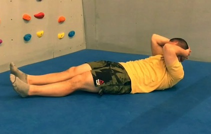

Статическая растяжка
Делаем до расслабления тканей, примерно до 60с, после нагрузок или вечером.
НИЗ
передняя часть бедра

Сгибаем ногу, берем ступню рукой и чуть отводим назад, сопротивляясь ногой.
икры
Прямой ногой встаем носком на какой то выступ, держимся руками, в обуви может быть удобнее.
внутреняя часть бедра

Отставляем ногу в сторону, а на другой приседаем.
задняя и передняя часть бедра
Делаем выпад, пытаемся сесть ниже, меняем ноги.
нога

Сидя тянемся к каждой ноге, вторая согнута.
ноги

Сидя тянемся к 2 прямым ногам.
ягодицы

Ложимся, сгибаем одну ногу и беремся за нее руками, вторую ногу заводим ступней на колено другой ноги, руками тянем к себе.
камбала
Согнутой ногой встаем носком на какой то выступ, держимся руками, в обуви может быть удобнее.
ВЕРХ
верх спины
Наклоняемся корпусом до упора руками на уровне пояса.
бицепс

Заводим прямую руку на уровне плеч на стену, рука отводится назад, стоим боком к стене.
трицепс

Если не получается свести руки, берем в кисти полотенце\одежду.
предплечья

Садимся на колени, выворачиваем кисти к себе, ставим их на пол, регулируем натяжение отводя корпус назад.
трапеция1

Тянем рукой голову к плечу, шеей сопротивляемся, меняем сторону.
трапеция2

Лежа, руками тянем голову вперед, шеей сопротивляемся.